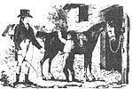
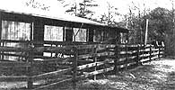
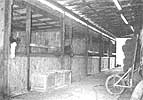
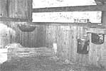

Ever thought of going into the horse motel business? The guests are great! They don't carouse all night,
complain about slow room service, or make unreasonable demands, and best of all . . .
Most members of the mink-and-manure set, those horse enthusiasts who spend a great deal of time, energy, and money on their animals, eventually find themselves taking to the open road with their hooved investments . . . in pursuit of faraway competitions, veterinary specialists, trail rides, farriers, and so on. These trips require hours of planning and elbow grease beforehand . . . and massive doses of stamina and patience en route. You see, hitching and loading the trailer is only the beginning of the story: Once on the road, countless stops are called for in order to attend to such things as motor troubles, periodic mucking out of the back, replenishing water and feed, and so forth. So it's a weary caravan indeed that seeks relief at the day's end. However, before the people on board can eat or rest, suitable overnight accommodations must be found for the horses.
Unfortunately, well-maintained temporary equine quarters (privately owned "horse motels") that are run by caring individuals who live on the premises-and can therefore provide maximum security against theft and cruelty-are few and far between. As a result, equestrians are often forced to either drive on through the night or stop and camp with their horses.
And considering the thousands of horses that are hauled over our highways yearly (especially during the show season that runs from mid-April through early fall), it's a real shame that there aren't more horse motels around. Right now, the demand for good, honest hoofer hostels far exceeds the supply.
However, this could be where you come in. If you live near, on the way to, or in the middle of horse country . . . if you enjoy horses . . . if you know how to handle equines or know a nearby professional who could teach you how . . . and, finally, if you have an old barn, unused outbuilding, or vacant half-acre or so of land that could be turned into rental stalls, you might want to consider opening up a horse motel. Your start-up costs for the enterprise (which could turn into a very rewarding sideline business) would only involve the construction materials needed to set up shop, and your ongoing overhead should be pretty minimal. (After all, horses don't need color television sets or heated swimming pools!)
STABLE SETUP
If you decide to take up managing a horse hostelry, the type of barn you construct (or, if you're lucky, reconstruct or simply equip) can be as plain or as elaborate as your finances and tastes dictate. Still, there are a few basic guidelines to follow. For one thing, four-legged guests who've been riding around all day in narrow rigs are much happier in a roomy box stall than in a trailerlike tie or standing space. A conventional 10' X 10' area is fine for a tiny 14-hand Arab, but a big-boned 16-hand Thoroughbred needs a couple more feet on each side. And because your guests will arrive in a variety of shapes and sizes, you'll probably be better off building "one size fits all" 12' X 12' stalls.
Most horses traveling cross-country are perfect ladies and gentlemen and are used to sleeping in unfamiliar surroundings and seeing new faces. Occasionally, however, a troublemaker will happen along, so be prepared: Construct solid, kick-resistant walls between stalls, and place meshed (hoofproof) fencing across the fronts. This arrangement will allow for plenty of light and ventilation and for adequate separation 'of neighbors.
Each "room" should be equipped with a sturdy horseproof door latch . . . a hayrack and feedbox (both of which you can make, or purchase from a tack shop or a feedstore) attached to the wall . . . and a good, sturdy five-gallon water bucket (which should be affixed to the stall in such a way that it can easily be removed for cleaning).
Before your guests arrive, make a complete check of the area for safety hazards. Ask any expert, and he or she will tell you that if a single protruding nail or other sharp object is overlooked, a horse will find a way to get hurt by it!
STABLE STAPLES
A thick layer of nice, clean bedding should await each weary traveler. And the stalls should receive frequent muckings when occupied . . . and thorough cleanings when vacant. Never use products from nut trees or dusty or moldy materials for bedding. If nibbled, an inferior "mattress" can cause thrush or colic and can aggravate breathing problems, sobe selective!
Water and feed also require special attention. Scrub the buckets out daily and keep them filled to the brim with cool, clear water. Inspect all food before you serve it. Any hay or grain that exhibits dust or a sour, fermented odor should be pitched out. As a rule, you probably won't need to store as much grain as hay. Most folks prefer to feed their mounts grain from home, since this is what the animals are used to, and when the animals are on the road their digestive systems can be very fragile. However, haulers often need to purchase hay, a commodity not so easily transported from home. Try to have plenty of high-protein timothy or alfalfa around for these customers, or at least know where you can get some in a pinch.
The going rental rates for stalls nowadays run between $7 and $15. This generally covers clean bedding, plenty of fresh water, and frequent barn checks during the night to make sure the horse is all right. You can add a charge of $2.00 or so for any extra services or facilities that the hauler wishes to take advantage of, such as feed or the use of a paddock area, washroom, or hot-walker.
PROTECT YOURSELF AND YOUR BOARDERS
With the care and comfort of your future charges taken care of, it's time to consider your financial safety. Have a lawyer draw up a contract that-aside from formally stating your obligations as host-includes a "not liable for sickness or injury/accident" clause covering both people and animals while on your premises, and a statement giving you permission to call a vet when you deem that necessary, with any resulting fees to be paid by the hauler.
Make sure that this contract is signed by the guest's owner/handler before the animal is even unloaded . . . and only after you've been shown the horse's health certificate (signed by a vet within the last ten days and verifying that the critter is up to date on its vaccinations and has a negative Coggin's test).
ADVERTISING
It makes good sense to work with such local businesses as hotels, motels, restaurants, tack shops, truck stops, and garages (rigs often break down!) on a "you scratch my back, I'll scratch yours" basis. Signs along nearby highways (with proper permission, of course) and a standing ad in a horse publication can also bring in business. Once you get going, however, you should be able to fill a lot of stalls as a result of word-of-mouth advertising from satisfied customers.
Of course, part of being a good host (and snaring those all-important referrals) is providing your customers with a few unasked-for but greatly appreciated extras: a handy, well-lighted unloading area (most folks arrive after dark, and horses have notoriously poor night vision) . . . free trailer parking . . . and-perhaps the most widely appreciated amenity of all- ahot cup of coffee!
Despite any minor inconveniences you may have to endure along the way, when you get involved with running a horse motel, you'll discover that this line of work is endlessly enjoyable, potentially profitable, and always interesting. And-just think-unlike most motel guests, yours won't clamor for room service at all hours of the night, they won't complain when there's no hot water, and (you guessed it!) they won't steal the towels!
EDITOR'S NOTE: Sue and her husband Bill own and operate the Bar Nothin' Ranch and Horse Motel in the Florida Panhandle and would be happy to talk with or reply to any MOTHER-readers interested in starting up a horse motel bootstrap business. Sue says she could have written this article for any number of equine publications, but she chose MOTHER because she thought the philosophies and goalsof our readers were in keeping with her own. If you're interested in more information, write (enclosing a self-addressed, stamped envelope, please) to Sue Robinson, Rt. 6, Box 246, DeFuniak Springs, FL 32433, or phone 904/892-7210.
You may also want to look into a publication called Travel'n Horsemans Stable Guide , published by Hughes', P.O. Box 872, Spanish Fort, AL 36527. It lists by state various horse motels and boarding barns across the U.S., comes out twice yearly, and costs $4.00 a copy.
Should you want to look into some sort of insurance policy to cover your horse motel, Rhulen Agency Inc., 196 Broadway, Monticello, NY 12701 (800/431-1270) specializes in mortality insurance for horses and has special packages available to stable and ranch owners. This firm has been in business nearly 50 years and is said to be one of the best horse insurance companies around.
|
 Contented guests at the author's Florida Panhandle horse motel peacefully await their next meal (or visitor, whichever comes first!). |
 A safe and simple, but efficiently designed, stall with plenty of fresh air and filled with lots of clean bedding awaits its next guest. (The low haybox allows the horse to eat naturally, with its head lowered as when grazing.) |
 |
|
 |
|
|